Buckwheat Pizza Crust | Cooked | Crispy Thin Crust | Oil-Free

Here we go… another pizza crust recipe, but this time I made it with soaked, whole buckwheat kernels. I love creating options because the more we can rotate ingredients, the more diverse our nutrient intake will be. I wrote a post called Where and How Do I Get All My Nutrients? which I recommend reading. I also love the challenge of making these crust recipes as close to the whole food as possible. So instead of buckwheat flour, I used the whole kernel. This pizza crust is characterized by its round, thin, unleavened, cracker-like crust.
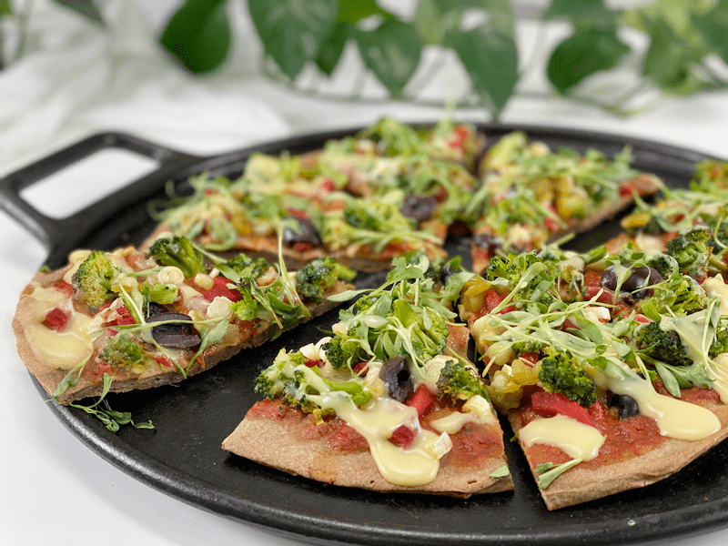
There are many different styles of pizza crust. There’s the Chicago-style deep dish, California flatbread, thin-crust, thick-crust, and then there is the Amie Sue-healthified style. I always do my best to create recipes that are rich in flavor, simple to make, easy to digest, and leave you wanting to come back for more. Ready to make your own pizza creation? If so, let’s continue discussing what ingredients I used and why.
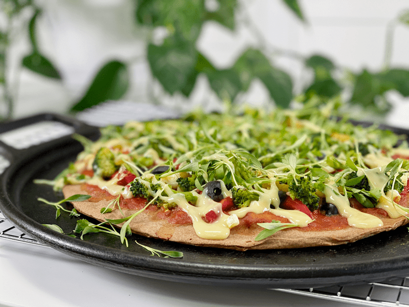
Ingredient Run-Down
Buckwheat (raw & soaked)
- In this recipe, you will want to soak the buckwheat prior to using it. I did this for several reasons: soaking reduces phytates, increases nutrient absorption, makes it easier for your body to digest, and plumps up the kernels, which creates a thick creamy batter. You can read my post on Buckwheat | Soaking and Sprouting for more information.
- I used RAW buckwheat. Toasted buckwheat is referred to as kasha. If you are looking for raw buckwheat groats, you’ll want to avoid kasha. You can always tell by the color and the aroma. Kasha is a darker reddish-brown color and has a strong nutty, toasted scent to it. Raw buckwheat groats are light brown or green and don’t have much of an aroma at all.
- I chose to use raw buckwheat kernels instead of buckwheat flour because I wanted to keep this recipe as close to the actual WHOLE food source as possible. I haven’t tested this recipe with buckwheat flour, but I have a strong feeling it would create a denser crust.
- If you love understanding where your food comes from; how it’s grown, harvested, and what parts of the plants are used (like me), check out the post I did called Buckwheat – Good for the Body, Good for the Land. I found my research to be fascinating.
Chia Seeds
- For this crust recipe, I made a chia seed slurry before adding it to the recipe.
- Chia seeds gelatinize quickly when combined with water and contain a large amount of soluble fiber.
- The gel-like substance can improve the overall structure of the crust very nicely. Because it retains water, it can be an effective solution to prevent the crust from drying out too soon.
- I used white chia seeds, but black can be used if that’s what you have on hand.
Arrowroot
- Arrowroot helps to create a crispy crust.
- In gluten-free baking, the starch molecules in arrowroot help to bind ingredients together, adding moisture and texture to your gluten-free pizza crust. But you have to be careful that you don’t add too much, or it can make your crust gummy.
Maple Syrup
- Did you know that most pizza crusts have sugar in them? It is added to feed the yeast, which is usually added to create more of a bread-like crust. It also aids in crust color development.
- We won’t be using yeast in this recipe, but I added just a tiny bit of maple syrup to balance the flavors. If you are avoiding ALL sugars, please feel confident to leave it out.
Ingredients
Yields 11.5″ crust (1/4″ thickness)
- 1 cup raw buckwheat, soaked
- 2 Tbsp chia seeds + 6 Tbsp water
- 2 Tbsp arrowroot powder
- 1 1/2 Tbsp Italian seasoning
- 3/4 cup hot water
- 1 Tbsp maple syrup
- 1 1/2 tsp sea salt
Preparation
Soaking the Buckwheat
- Place the buckwheat in a medium glass bowl, adding two cups of water for one cup of buckwheat. Add 2 Tbsp of raw apple cider vinegar or lemon juice. Stir, cover with a clean cloth, and let it sit on the counter for 4-8 hours. If it sits any longer, change out the water and place it in the fridge.
- It will almost double in volume once soaked.
- Once done soaking, drain and rinse.
Dough Assembly
- Mix the chia seeds and water together in a small bowl and let it sit for 10 – 15 minutes until the mixture becomes a gel.
- The water will cause the chia seeds to swell and create a gelatinous texture.
- Preheat oven to 350 degrees (F). If using a cast-iron pan, place that in the oven so it can preheat as well.
- In the blender, combine the soaked and drained buckwheat, chia seed gel, arrowroot, Italian seasoning, water, maple syrup, and salt. Blend until creamy.
Baking
- Here are some pan ideas: well-seasoned cast-iron pan (no oil or parchment needed), non-seasoned cast-iron pan (add parchment paper so it doesn’t stick, no oil needed), typical baking sheet (use parchment paper, no oil needed), or a pizza stone.
- My all-time favorite is to use a cast-iron pan, because I can preheat it, which really helps with the baking process.
- If you have any doubt that your pan is non-stick, please use parchment paper.
- Pour the batter into the center of the pan, letting it naturally span outward. Gently spread the batter toward the edge of the pan. Be careful that you don’t spread it too thin or thick. Also, make sure that you spread it evenly so it bakes evenly.
- Slide the pan onto the center rack in the oven and bake for 20 minutes, remove, flip, peel off the parchment paper and bake for an additional 15 minutes.
- Cook time will depend on your oven, the pan you are using, and how thick or thin the batter was spread, so please keep an eye on it.
- Add your pre-cooked toppings and bake for another 5-10 minutes.
-
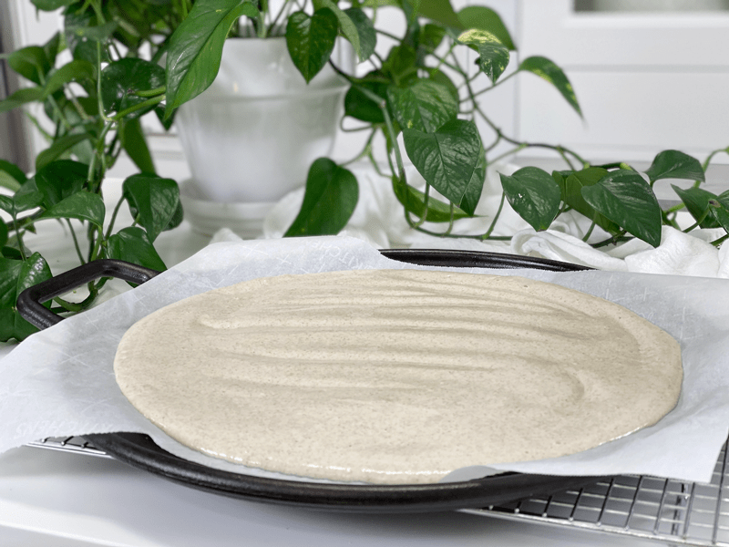
-
I highly recommend lining your pan with parchment paper for this recipe. I tested it without, and it stuck!
-
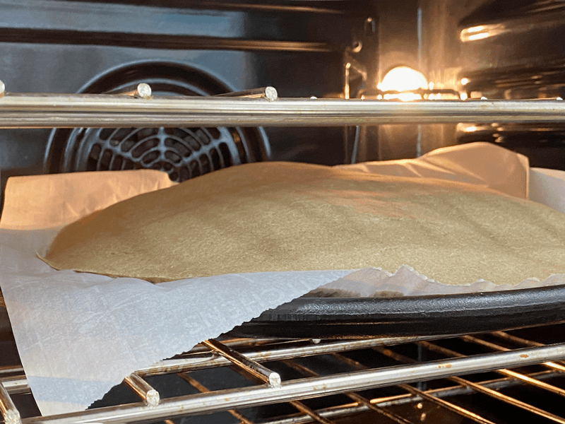
-
Much to my delight, while checking the progress of the crust, I found that it REALLY puffed up during the baking process.
-
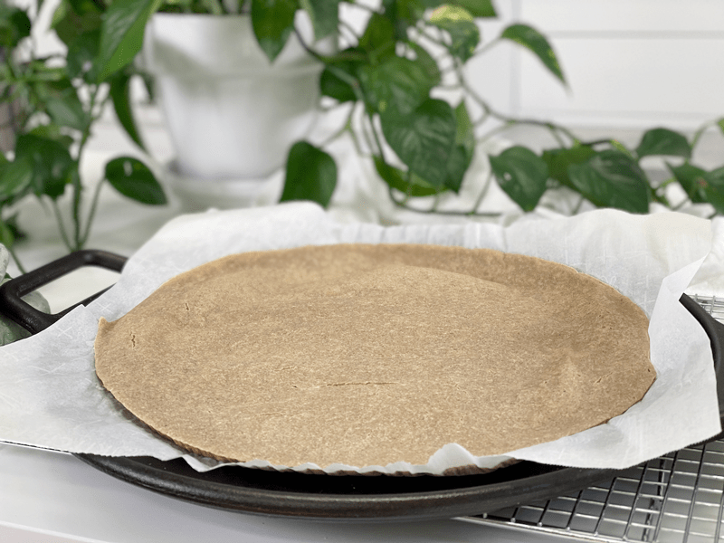
-
Once I pulled it out to flip it over, it deflated. Be careful that your hands are not in line of the release hole, as it will be HOT.
-
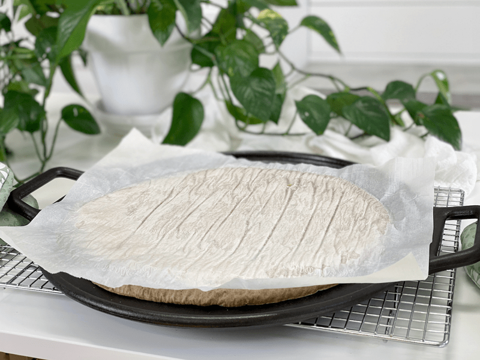
-
Flip the crust over so you can peel the parchment paper off.
-
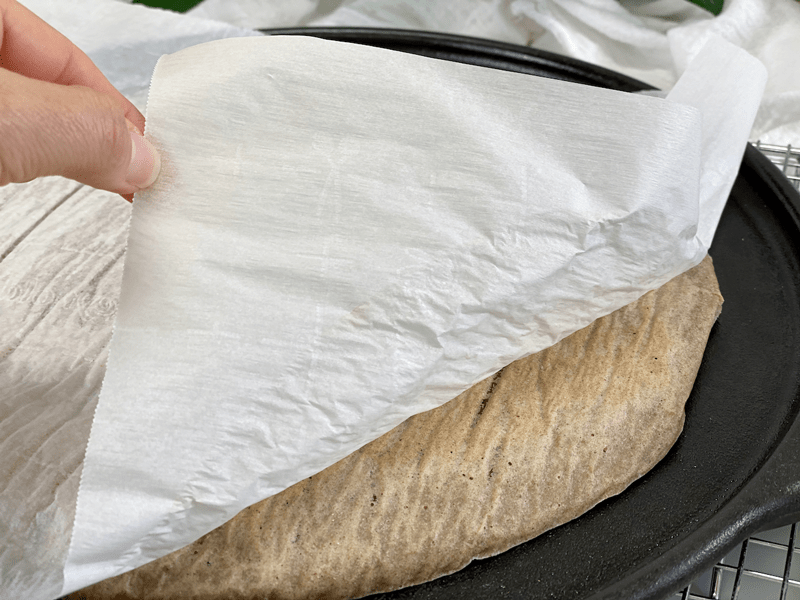
-
Take it slow and easy.
-
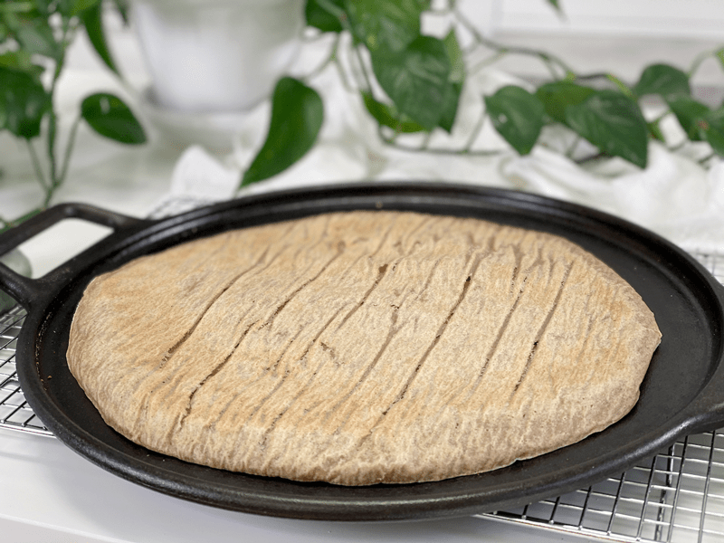
-
The parchment paper left fun lines and wrinkles in the crust. I’ll refer to it as “character.” Place it back in the oven to cook another 10 minutes.
-
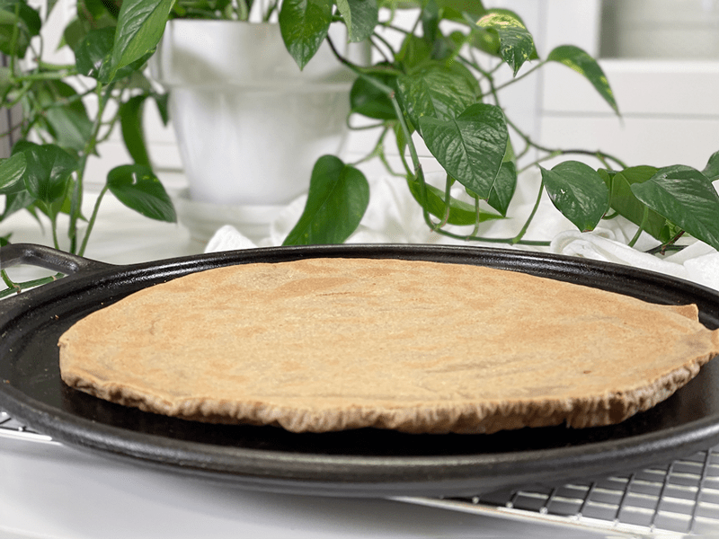
-
Once I pulled it out of the oven, I flipped it over so you can see how it cooked on the other side. I will end up flipping it back over to put the toppings on.
-
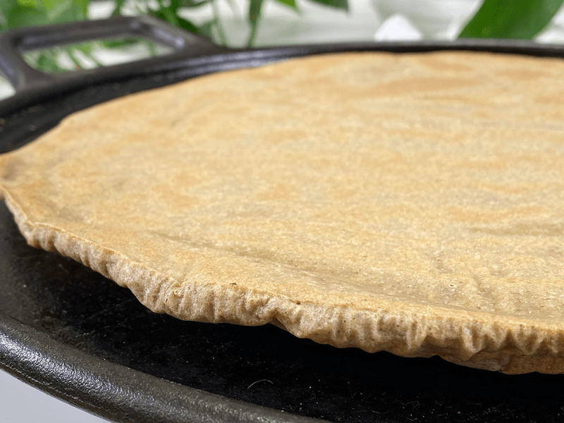
-
I took a few close-ups so you know what to expect. Here you can see some slight browning.
-
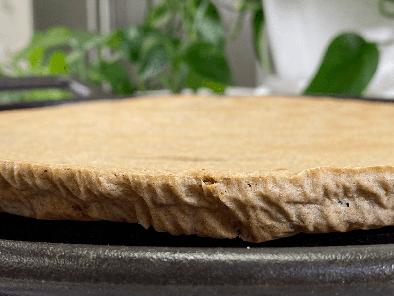
-
Here is a close-up of the thickness. The center is a bit thinner, but I am loving how this turned out.
© AmieSue.com